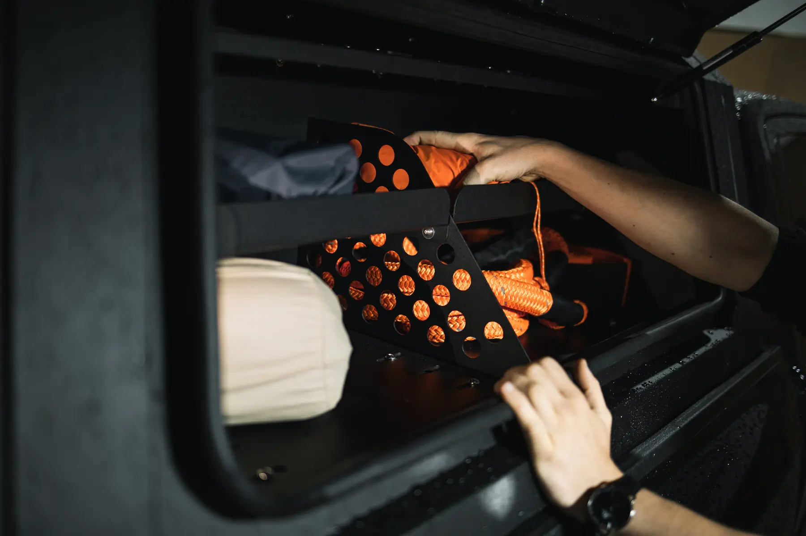
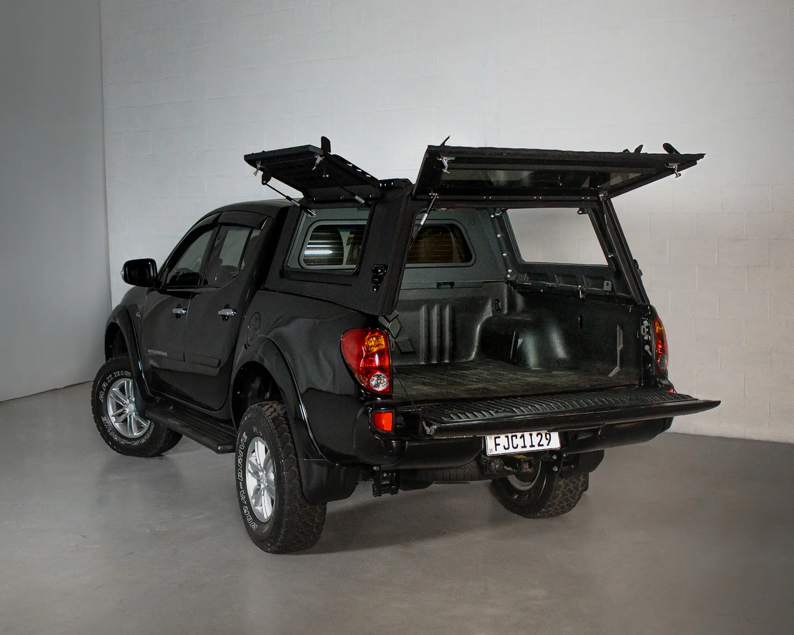
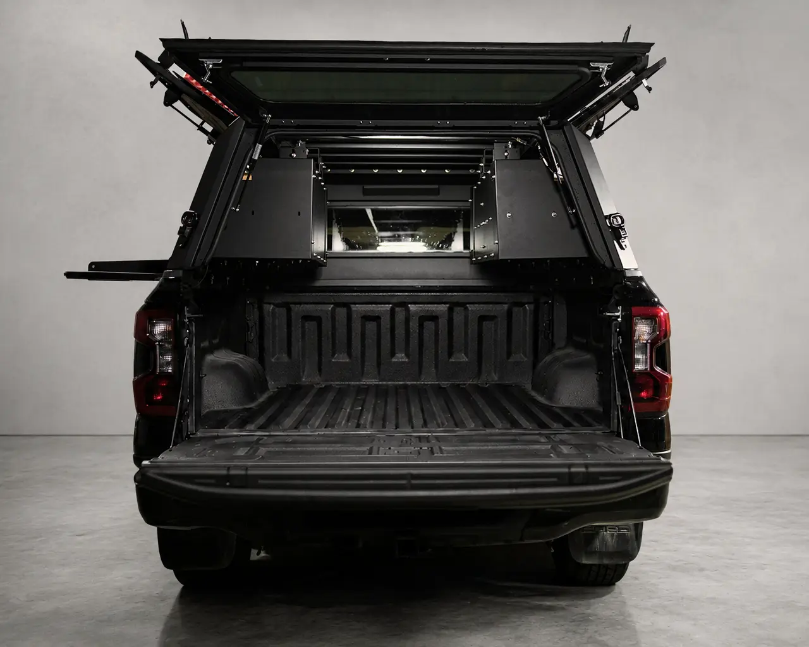
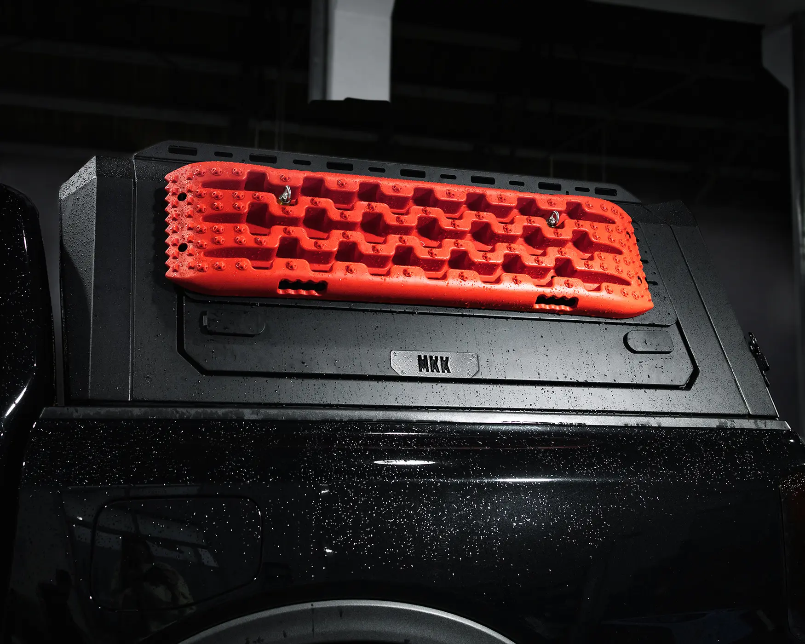
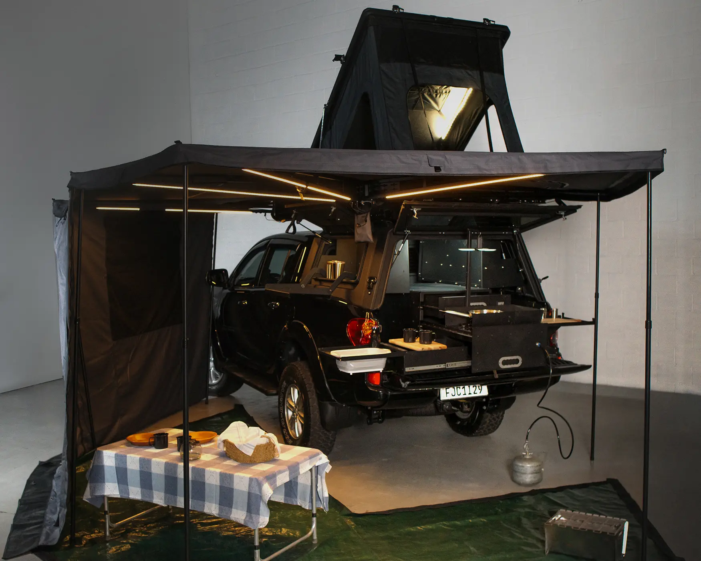
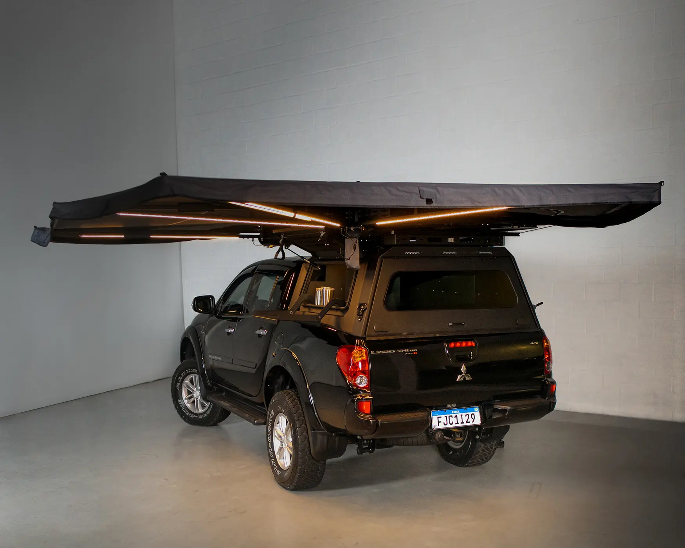
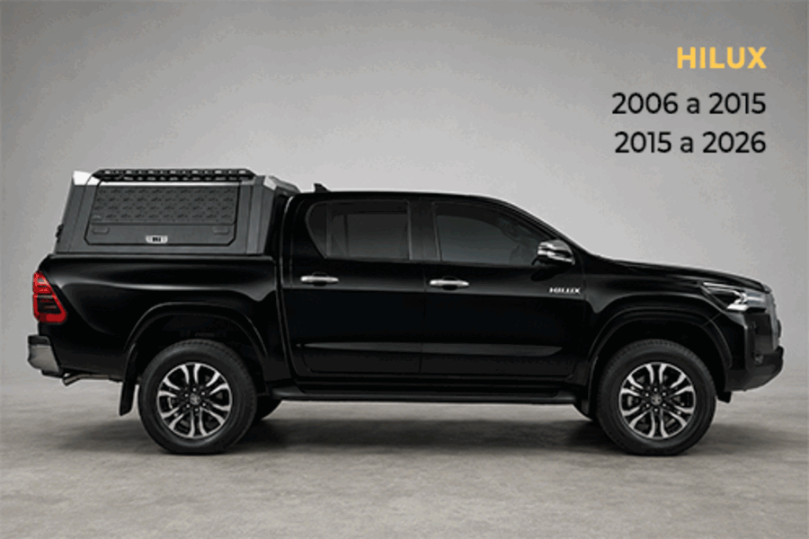

Carga exposta e insegura?
Feche a caçamba com uma estrutura rígida, seis travas e acesso controlado.
Proteção para seguir tranquilo.Capota rígida em alumínio para transformar sua picape em um espaço fechado, seguro e organizado, pronto para o trabalho e para expedições.
Para quem é a Canopy Armor
A Canopy Armor resolve as três dores que mais limitam quem depende da picape todos os dias.
Feche a caçamba com uma estrutura rígida, seis travas e acesso controlado.
Proteção para seguir tranquilo.Abra pelas laterais ou pela traseira e encontre o que precisa sem descarregar tudo.
Acesso rápido no uso real.Adicione módulos, barraca, toldo e equipamentos conforme sua próxima aventura.
Uma base pronta para evoluir.Review completo
Aberturas, vedação, módulos e instalação explicados em um único vídeo.

Benefícios exclusivos
Cada detalhe existe para tornar a picape mais segura, acessível e preparada.
Estrutura em alumínio, pintura eletrostática e seis fechaduras com travas individuais.
O sistema Dust Out ajuda a mitigar a entrada de poeira durante seus deslocamentos.
Portas laterais e traseira com abertura ampla para alcançar tudo sem desmontar a caçamba.
Armários, mesa deslizante e painel MOLLE adaptam a Canopy ao seu tipo de uso.
Luz interna e conjunto no aerofólio para ré, freio e setas.
Desenvolvida pela MKK para as picapes e para as condições encontradas no Brasil.
 Acesso total
Acesso total
Portas laterais e traseira
As aberturas amplas levam mais praticidade para o uso diário sem abrir mão de uma estrutura firme, vedada e pronta para receber novos módulos.

Organização inteligenteMódulos configuráveis
Crie compartimentos independentes, adicione uma mesa de trabalho e leve os itens essenciais de forma segura e previsível.
Recursos técnicos
Uma base robusta para usar agora e evoluir quando seus planos crescerem.

Estrutura leve e resistente.
Travas individuais nas aberturas.
Vidro Frits com 5 mm de espessura.
Pressurização para mitigar poeira.
LED interno e luzes no aerofólio.
Encaixe projetado para cada picape.
Configure do seu jeito
Galeria
Explore o acabamento, o acesso e as possibilidades de configuração da Canopy Armor.



Opcionais e acessórios
Escolha os upgrades que fazem sentido para o seu trabalho, viagem ou expedição.

Uma bancada de trabalho com acesso aos equipamentos e melhor aproveitamento do espaço.

Compartimentos independentes para ferramentas, equipamentos e itens de expedição.

Expanda a configuração e fixe pranchas, ferramentas e acessórios do seu jeito.

Base para transformar o teto em mais uma área útil da sua expedição.
Uso real
Trabalho, fim de semana ou expedição completa: a Canopy se adapta ao que vem depois.




Visualização automática dos modelosCompatibilidade
Selecione o modelo e o ano no formulário. A equipe confirma cada medida antes do pedido.
Não encontrou seu carro? Fale com a equipe para avaliar uma configuração.
Instalação e suporte
A instalação especializada respeita a configuração do veículo e prepara a Canopy para o uso escolhido.
Modelo, ano e uso pretendido.
Base e acessórios sob medida.
Montagem, testes e orientação.
Atendimento especializado antes, durante e depois da instalação.
Perguntas frequentes
Se a sua dúvida não estiver aqui, um especialista MKK pode avaliar seu caso.
A Canopy possui encaixes desenvolvidos para diferentes gerações de Hilux, Triton, Amarok, Frontier e Ranger. Antes do pedido, a equipe confirma o modelo e o ano exatos do veículo.
A fixação é dedicada ao modelo da picape e foi pensada para preservar o veículo. A configuração final e qualquer necessidade específica são confirmadas com o especialista antes da instalação.
A Canopy recebe diferentes módulos. Armários, mesa deslizante, painel MOLLE e outros acessórios são opcionais, permitindo montar a configuração ideal para seu uso.
O sistema trabalha com pressurização para ajudar a mitigar a entrada de poeira. O resultado também depende da vedação da caçamba e das condições de uso.
A estrutura e os trilhos superiores ampliam as possibilidades de configuração. A capacidade e a distribuição da carga devem ser validadas pela equipe conforme o veículo e os acessórios escolhidos.
Preencha o formulário com o modelo da sua picape e o uso pretendido. Um especialista da MKK entrará em contato para confirmar compatibilidade e montar a proposta.
Solicite sua proposta
Conte como você pretende usar a Canopy Armor. A equipe MKK confirma a compatibilidade e prepara uma proposta personalizada.
MKK Off Road
Referência em bagageiros e barracas de teto, a MKK reúne engenharia, fabricação nacional e experiência off-road para desenvolver produtos que funcionam no uso real.